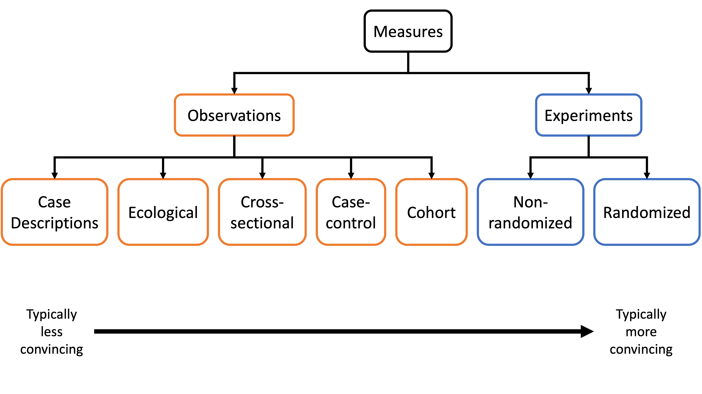
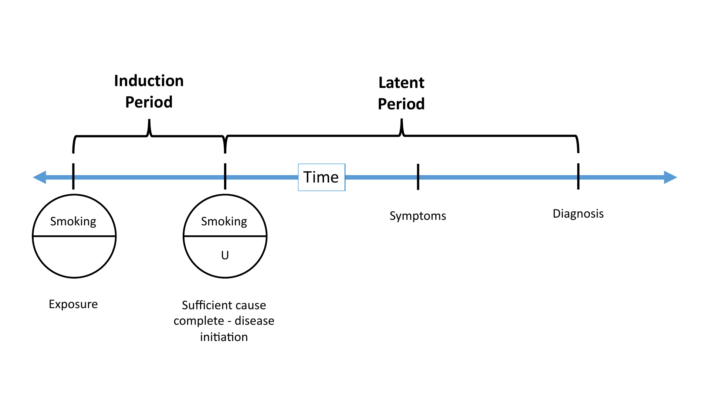
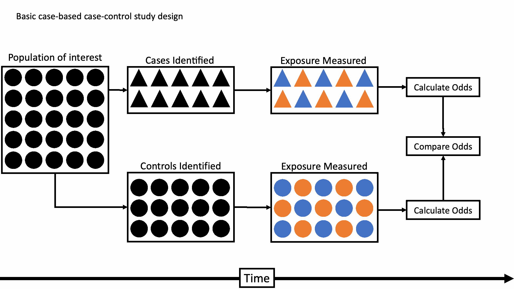
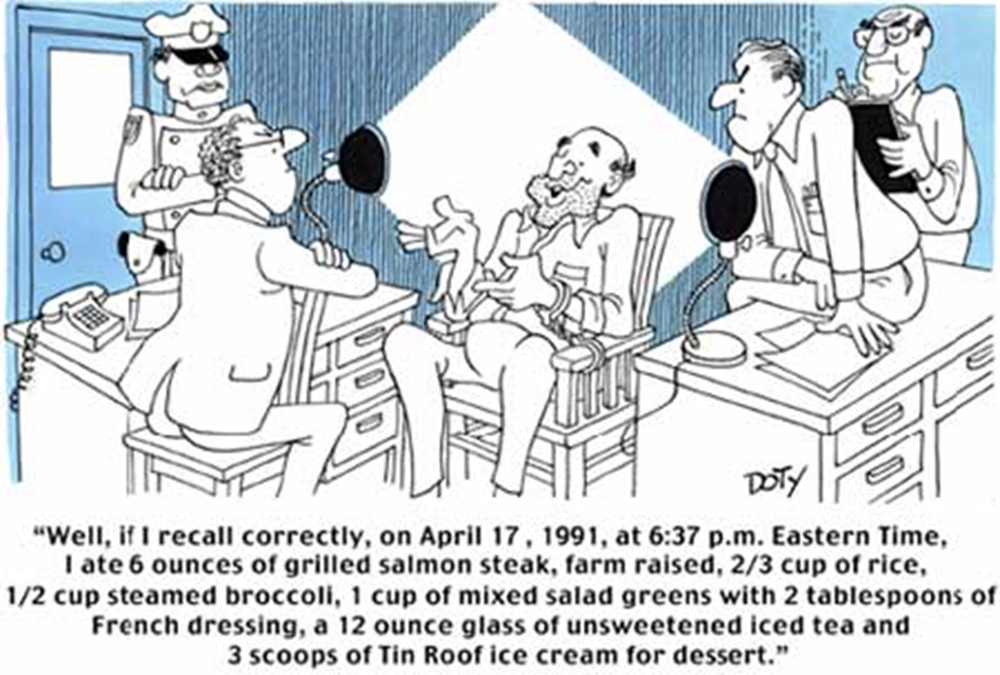

Case-Control Studies
APHS 20203 · Epidemiology & Biostatistics
Hierarchy of Study Designs

Basic Experimental Study Design

Common Prospective Cohort Study Design

Common Retrospective Cohort Study Design

When Cohort Is Not Ideal
Cohort studies are powerful — but not always practical.
What if:
The disease is rare?
The outcome has a long latency period?
Long-term follow-up is too costly or infeasible?
You need results quickly?
In these situations, a different design may be more efficient.
Induction and Latent Periods

Basic Case-Control Study Design

Retrospective Cohort vs. Case-Control
Case-control
- Sample based on outcome and look backward for exposure.
Retrospective Cohort
Sample based on exposure and look “forward” towards the outcome
A cohort study was done. You just weren’t there to initially observe it
Threats to Validity
Study Base Principle
Cases and controls should be “representative of the same base experience.”
If a potential control had gotten the disease, they would have been selected with the same probability as any other case.
Recall Bias
Definition: A type of information bias in which participants remember past exposures differently.
When it occurs
Often in case-control studies
Cases may recall exposures more carefully than controls
Key idea: Differences in memory between groups can distort the exposure–outcome association.

Interviewer and Observer Bias
Interviewer Bias
Occurs during data collection
Interviewer knowledge influences how questions are asked
Can lead to different responses between groups
Observer Bias
Occurs during outcome assessment
Observer expectations influence how outcomes are recorded
More likely when blinding is absent
Key idea: When researchers influence data collection or measurement, results may be systematically distorted.
Why Use an Odds Ratio?
In case-control studies, we cannot calculate risk directly. Why?
We start with a fixed number of cases and controls
The total population at risk is unknown
Incidence cannot be measured
Instead, we quantify association using the Odds Ratio (OR)
What Does OR Measure?
- The odds of prior exposure among cases compared to the odds of exposure among controls
Key Contrast:
Cohort → Uses Relative Risk (RR)
Case-Control → Uses Odds Ratio (OR)
Analysis of Case-Control Studies
Odds of Exposure Among Cases
Given the prototypical 2x2 table for case-control data, which of the formulas below will calculate the odds of exposure among cases?
| Cases | Controls | |
|---|---|---|
| Exposed | A | B |
| Not exposed | C | D |
A. \(\frac{a}{c}\)
B. \(\frac{a}{b}\)
C. \(\frac{a}{a+b}\)
D. \(\frac{a}{a+c}\)
Odds of Exposure Among Cases
Given the prototypical 2x2 table for case-control data, which of the following is an accurate expression of the odds of exposure among cases?
| Cases | Controls | |
|---|---|---|
| Exposed | 50 | 25 |
| Not exposed | 100 | 100 |
| Odds of exposure | ??? |
The odds of exposure among cases = \(a/c = 50/100 = 0.5\).
Equivalent ways to express these odds: 50:100 = 0.5:1 = 5:10 = 1:2.
For every 1 exposed case, there are 2 unexposed cases.
Odds of Exposure Among Controls
Given the prototypical 2x2 table for case-control data, which of the following is an accurate expression of the odds of exposure among controls?
| Cases | Controls | |
|---|---|---|
| Exposed | 50 | 25 |
| Not exposed | 100 | 100 |
| Odds of exposure | 50 / 100 | ??? |
A. 0.2
B. 1:2
C. 2.5:1
D. 0.25
Odds of Exposure
| Cases | Controls | |
|---|---|---|
| Exposed | 50 | 25 |
| Not exposed | 100 | 100 |
| Odds of exposure | 50 / 100 | 25 / 100 |
Odds of exposure among cases = 50 / 100 = 0.5
Odds of exposure among controls = 25 / 100 = 0.25
Association
The distribution of the thing we are measuring differs, on average, between two groups. This could be its center, spread, shape, or the proportion of people in each category.
Knowing something about X tells us something about Y.
Comparing Exposure Odds
| Cases | Controls | |
|---|---|---|
| Exposed | 50 | 25 |
| Not exposed | 100 | 100 |
| Odds of exposure | 50 / 100 | 25 / 100 |
Odds of exposure among cases = 0.5
Odds of exposure among controls = 0.25
The odds are higher among cases. How much higher?
Calculating the Exposure Odds Ratio
| Cases | Controls | |
|---|---|---|
| Exposed | 50 | 25 |
| Not exposed | 100 | 100 |
| Odds of exposure | 50 / 100 | 25 / 100 |
\[ \text{Exposure OR} = \frac{\text{Odds of exposure among cases}}{\text{Odds of exposure among controls}} = \frac{a/c}{b/d} \]
Odds of Exposure Among Controls
Given the prototypical 2x2 table for case-control data, what is the exposure odds ratio?
| Cases | Controls | |
|---|---|---|
| Exposed | 50 | 25 |
| Not exposed | 100 | 100 |
| Odds of exposure | 50 / 100 | 25 / 100 |
A. 1
B. 2
C. 3
D. 4
Exposure Odds Ratio: Calculation
| Cases | Controls | |
|---|---|---|
| Exposed | 50 | 25 |
| Not exposed | 100 | 100 |
| Odds of exposure | 50 / 100 | 25 / 100 |
\[ \text{Exposure OR} = \frac{a/c}{b/d} = \frac{50/100}{25/100} = \frac{0.5}{0.25} = 2 \]
How would you interpret this odds ratio?
Exposure Odds Ratio: Interpretation
| Cases | Controls | |
|---|---|---|
| Exposed | 50 | 25 |
| Not exposed | 100 | 100 |
| Odds of exposure | 50 / 100 | 25 / 100 |
\[ \text{Exposure OR} = \frac{50/100}{25/100} = \frac{0.5}{0.25} = 2 \]
The odds of exposure among cases are 2 times the odds of exposure among controls.
Why Use the Odds Ratio?
| Cases | Controls | |
|---|---|---|
| Exposed | 50 | 25 |
| Not exposed | 100 | 100 |
| Odds of exposure | 50 / 100 | 25 / 100 |
We can calculate it directly from a case-control study.
We can also estimate it using logistic regression.
Under certain conditions, it approximates the risk ratio.
Hypothetical Cohort: Hypertension and MI
One-year incidence of acute myocardial infarction (MI, or heart attack). Severe systolic hypertension: ≥180 mm Hg. Normal systolic blood pressure: <120 mm Hg.
| MI (+) | MI (–) | Total | |
|---|---|---|---|
| Severe hypertension | 180 | 9,820 | 10,000 |
| Normotensive | 30 | 9,970 | 10,000 |
Risk of MI among people with severe hypertension = 180 / 10,000 = 0.018
Risk of MI among normotensive people = 30 / 10,000 = 0.003
Risk ratio (incidence proportion ratio) = 0.018 / 0.003 = 6
Participants with severe hypertension had 6 times the risk of MI over one year compared with normotensive participants.
Risk and Odds
| Outcome | No outcome | Total | |
|---|---|---|---|
| Exposed | a | b | a + b |
| Unexposed | c | d | c + d |
| Measure | Formula | a = 0 | Incidence = 0.001 |
|---|---|---|---|
| Incidence | \(\frac{a}{a+b}\) | \(\frac{0}{0+b}=0\) | \(0.001\) |
| Odds | \(\frac{\frac{a}{a+b}}{1-\frac{a}{a+b}}\) | \(\frac{\frac{0}{0+b}}{1-\frac{0}{0+b}} = \frac{0}{1-0} = \frac{0}{1} = 0\) | \(\frac{0.001}{1-0.001} \approx \frac{0.001}{1}\) |
Risk in the exposed: \(p = a/(a+b)\). Odds in the exposed: \(p/(1-p) = a/b\).
When risk is small, 1 − risk is close to 1, so odds and risk are similar.
Comparing the Risk Ratio and Odds Ratio
| MI (+) | MI (–) | Total | |
|---|---|---|---|
| Severe hypertension | 180 | 9,820 | 10,000 |
| Normotensive | 30 | 9,970 | 10,000 |
- The incidence of MI among people with severe hypertension = 180 / 10,000 = 0.018
- The incidence of MI among people who are normotensive = 30 / 10,000 = 0.003
- Risk ratio = 0.018 / 0.003 = 6
- The odds of severe hypertension among cases = 180 / 30 = 6
- The odds of severe hypertension among controls = 9,820 / 9,970 ≈ 0.985
- Exposure OR = (180 / 30) / (9,820 / 9,970) ≈ 6.09
Hypertension and MI: Interpreting the OR
| MI (+) | MI (–) | Total | |
|---|---|---|---|
| Severe hypertension | 180 | 9,820 | 10,000 |
| Normotensive | 30 | 9,970 | 10,000 |
- Exposure odds among cases = 180 / 30 = 6
- Exposure odds among non-cases = 9,820 / 9,970 ≈ 0.985
- Exposure OR = (180 / 30) / (9,820 / 9,970) ≈ 6.09
Participants with MI had 6.09 times the odds of severe hypertension compared with participants who did not have an MI during the one-year study period.
Sampling 10% of Controls
| MI (+) | MI (–) | Cohort total | |
|---|---|---|---|
| Severe hypertension | 180 | 982 | ?? |
| Normotensive | 30 | 997 | ?? |
- Population risks require the original cohort denominators: 180 / ?? and 30 / ??.
- Exposure odds among cases = 180 / 30 = 6
- Exposure odds among sampled controls = 982 / 997 ≈ 0.985
- Exposure OR = (180 / 30) / (982 / 997) ≈ 6.09
The OR is unchanged when we sample the same fraction of exposed and unexposed non-cases.
Disease Odds Ratio
| MI (+) | MI (–) | Cohort total | |
|---|---|---|---|
| Severe hypertension | 180 | 9,820 | ?? |
| Normotensive | 30 | 9,970 | ?? |
- Disease odds with severe hypertension = 180 / 9,820 ≈ 0.01833
- Disease odds with normal blood pressure = 30 / 9,970 ≈ 0.003009
- Disease OR = (180 / 9,820) / (30 / 9,970) ≈ 6.09
Participants with severe hypertension had 6.09 times the odds of MI over one year compared with normotensive participants.
Disease OR With 10% of Controls
| MI (+) | MI (–) | Cohort total | |
|---|---|---|---|
| Severe hypertension | 180 | 982 | ?? |
| Normotensive | 30 | 997 | ?? |
- Sample odds with severe hypertension = 180 / 982 ≈ 0.1833
- Sample odds with normal blood pressure = 30 / 997 ≈ 0.03009
- Disease OR = (180 / 982) / (30 / 997) ≈ 6.09
Participants with severe hypertension had 6.09 times the odds of MI over one year compared with normotensive participants. The individual sample odds differ from the population odds.
Interpreting the Odds Ratio
Interpreting the Odds Ratio (OR)
OR = 1: No association between exposure and disease
OR > 1: Exposure is associated with higher odds of disease
OR < 1: Exposure is associated with lower odds of disease
Strengths and Limitations
Strengths
Efficient for studying rare diseases
Faster and less costly than cohort studies
Require fewer participants
Useful for diseases with long latency
Limitations
Cannot directly measure incidence or risk
Vulnerable to selection bias
Prone to recall bias
Control selection can be challenging
Cohort vs. Case-Control Studies
| Feature | Cohort Study | Case-Control Study |
|---|---|---|
| Start With | Exposure | Outcome |
| Direction | Exposure → Outcome | Outcome → Exposure |
| Measure | Relative Risk (RR) | Odds Ratio (OR) |
| Best For | Rare exposures | Rare diseases |
| Time & Cost | Longer, more expensive | Faster, less expensive |
| Main Bias Concern | Loss to follow-up | Selection & recall bias |
| Can Measure Incidence? | Yes | No |
Practice: Sampling
In a case-control study, we typically sample based on the _____ we are interested in studying.
A. Exposure
B. Outcome
Practice: Identify the Study Design
Researchers survey 1,000 adults at a single point in time, asking about their current smoking status and whether they currently have a chronic cough. What type of study is this?
A. Cohort study
B. Case-control study
C. Cross-sectional study
D. Randomized trial
Practice: Identify the Study Design
Researchers use medical records from 2010 to identify 1,000 smokers and 1,000 nonsmokers who were free of lung cancer. They review records through 2020 to determine who developed lung cancer. All records already exist when the study begins. What type of study is this?
A. Cohort study
B. Case-control study
C. Cross-sectional study
D. Randomized trial
Practice: Identify the Study Design
Researchers sample 500 patients who have lung cancer and 500 patients who do not have lung cancer. They compare the two groups’ smoking histories before the lung cancer diagnoses. What type of study is this?
A. Cohort study
B. Case-control study
C. Cross-sectional study
D. Randomized trial
Practice: Study Base Principle
Shands Hospital at the University of Florida is a referral hospital for a variety of cancer diagnoses -- including bronchogenic carcinoma -- for the North Florida region where it is located.
Researchers are interested in the association between bronchogenic carcinoma and a history of cigarette smoking, and they decide to conduct a case-control study. Cases are selected from the admissions records to the cancer center. Controls are randomly selected from the population of the surrounding county.
Does the control group violate the study base principle?
A. Probably
B. Probably not
Practice: Control Selection
Researchers are interested in the effect of obesity on colorectal cancer and conduct a case-control study. Cases are selected from a large colon cancer registry. Researchers are concerned that unmeasured genetic factors may bias study results.
What would be a good control group to remove the potential confounding effects of genetic factors?
Practice: Identifying Bias
In a case-control study investigating the relationship between alcohol use and liver cancer, cases were recruited from a major urban hospital. Controls were recruited from a local fitness club.
Which bias is most likely?
A. Recall bias
B. Attrition bias
C. Selection bias
D. Interviewer bias
Practice: Interpreting Odds
In a study of Parkinson’s disease, the odds of prior pesticide exposure among cases were 0.25, or 1 to 4.
What does this mean?
A. 25% of cases had prior pesticide exposure
B. For every 1 case with prior pesticide exposure, there were 4 cases without prior exposure
C. Cases had 25% greater risk of pesticide exposure
D. Cases were 4 times as likely to have prior pesticide exposure as to have no prior exposure
Practice: Interpreting an Odds Ratio
In a case-control study, researchers compared patients with Parkinson’s disease to controls without Parkinson’s disease. The odds ratio for prior pesticide exposure was 2.5.
What does this mean?
A. Pesticide exposure causes Parkinson’s disease
B. People exposed to pesticides had 2.5 times the risk of Parkinson’s disease
C. Parkinson’s disease cases had 2.5 times the odds of prior pesticide exposure compared to controls
D. 2.5% of Parkinson’s disease cases had prior pesticide exposure
Practice: Interpreting an Odds Ratio
In a case-control study, researchers compared patients with Alzheimer’s disease to controls without Alzheimer’s disease. The odds ratio for regular physical activity during midlife was 0.60.
What does this mean?
A. Alzheimer’s disease cases had 40% lower odds of regular physical activity during midlife compared to controls
B. Physically active people had 60% lower risk of Alzheimer’s disease
C. Regular physical activity prevents Alzheimer’s disease
D. There was no association between physical activity and Alzheimer’s disease